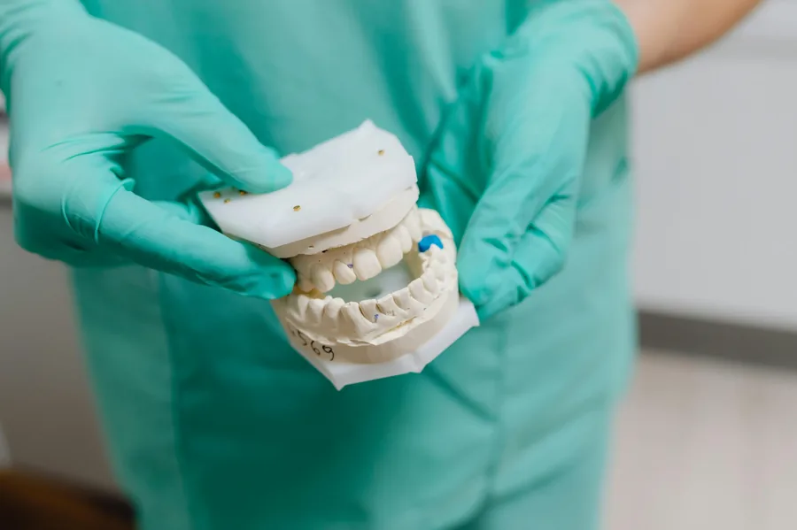

Administrator danych
Administratorem danych jest Labor-Tech Anna Jarosz, ul. Sielankowa 9/1a, 20-802 Lublin. Kontakt: labortechlublin@gmail.com, tel. +48 608 373 443.
Zasady przetwarzania danych osobowych w związku z kontaktem i współpracą B2B.

Administratorem danych jest Labor-Tech Anna Jarosz, ul. Sielankowa 9/1a, 20-802 Lublin. Kontakt: labortechlublin@gmail.com, tel. +48 608 373 443.
Przetwarzamy dane przekazane w formularzu lub korespondencji (np. imię i nazwisko, nazwa gabinetu, e-mail, numer telefonu, treść wiadomości) wyłącznie w celu obsługi zapytania i współpracy B2B.
Dane przetwarzamy w celu odpowiedzi na zapytanie, przygotowania wyceny, realizacji współpracy oraz kontaktu organizacyjnego. Podstawą jest art. 6 ust. 1 lit. b RODO (działania przed zawarciem umowy / umowa) oraz art. 6 ust. 1 lit. f RODO (uzasadniony interes – komunikacja i ochrona roszczeń).
Dane mogą być powierzane podmiotom wspierającym nas technicznie (hosting, poczta e-mail) wyłącznie w zakresie niezbędnym do działania serwisu i komunikacji.
Dane przechowujemy przez czas niezbędny do obsługi zapytania, prowadzenia współpracy oraz – w razie potrzeby – do czasu przedawnienia roszczeń wynikających ze współpracy.
Masz prawo dostępu do danych, ich sprostowania, usunięcia, ograniczenia przetwarzania, przenoszenia oraz wniesienia sprzeciwu. Przysługuje też prawo wniesienia skargi do Prezesa UODO.
Podanie danych jest dobrowolne, ale może być niezbędne do odpowiedzi na zapytanie i realizacji współpracy.
Serwis może używać niezbędnych plików cookies związanych z jego działaniem. Jeśli w przyszłości uruchomimy narzędzia analityczne lub marketingowe, zaktualizujemy tę informację.